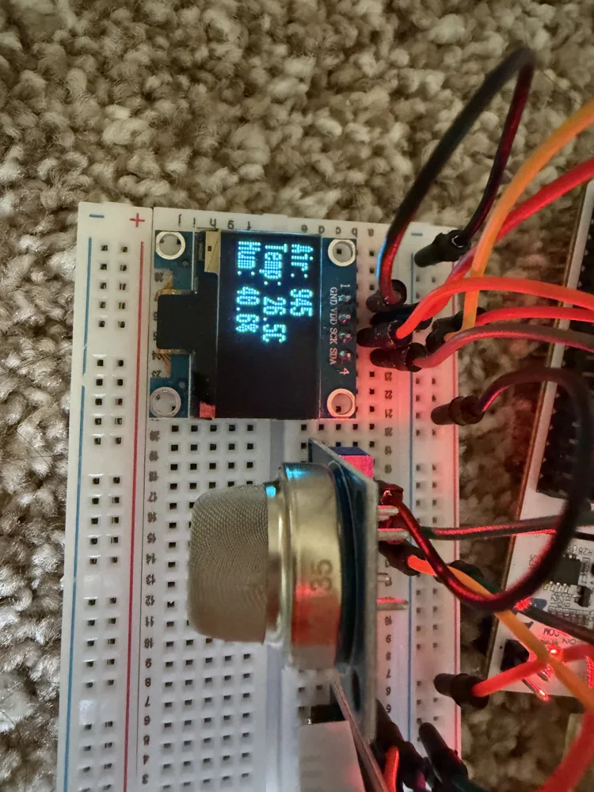

03 / Embedded systems
STM32 environmental monitor.
An indoor environmental monitor that brings analog sensing, a timed digital sensor protocol, and an I2C display together on one microcontroller.
Personal project · Embedded C · STM32CubeIDE / CubeMX
- Platform
- STM32F411RE
- Core clock
- 100 MHz
- Analog input
- 12-bit ADC

The task
Build a complete embedded sensing pipeline: acquire gas, temperature, and humidity readings, process them in firmware, and present them on a local display.
Three interfaces, one application
The MQ135 feeds an analog signal into ADC1. The DHT22 sends temperature and humidity over its single-wire timed protocol. The SSD1306 OLED communicates over I2C1, making the readings available without a connected computer.
My implementation
I configured the peripheral pin mapping, GPIO and alternate-function routing, and the 100 MHz clock tree in STM32CubeMX. The firmware uses the STM32F4 HAL, an SSD1306 display library, and a DHT22 driver to connect the peripherals into the monitoring application.
Engineering limits
The repository documents an approximate gas-sensor calibration value and operation of the MQ135 at 3.3 V rather than its rated 5 V. Gas values are prototype estimates; the setup should not be treated as a calibrated CO₂ instrument.

Source code, peripheral mapping, setup photos, dependencies, and calibration limitations are documented in the project repository.